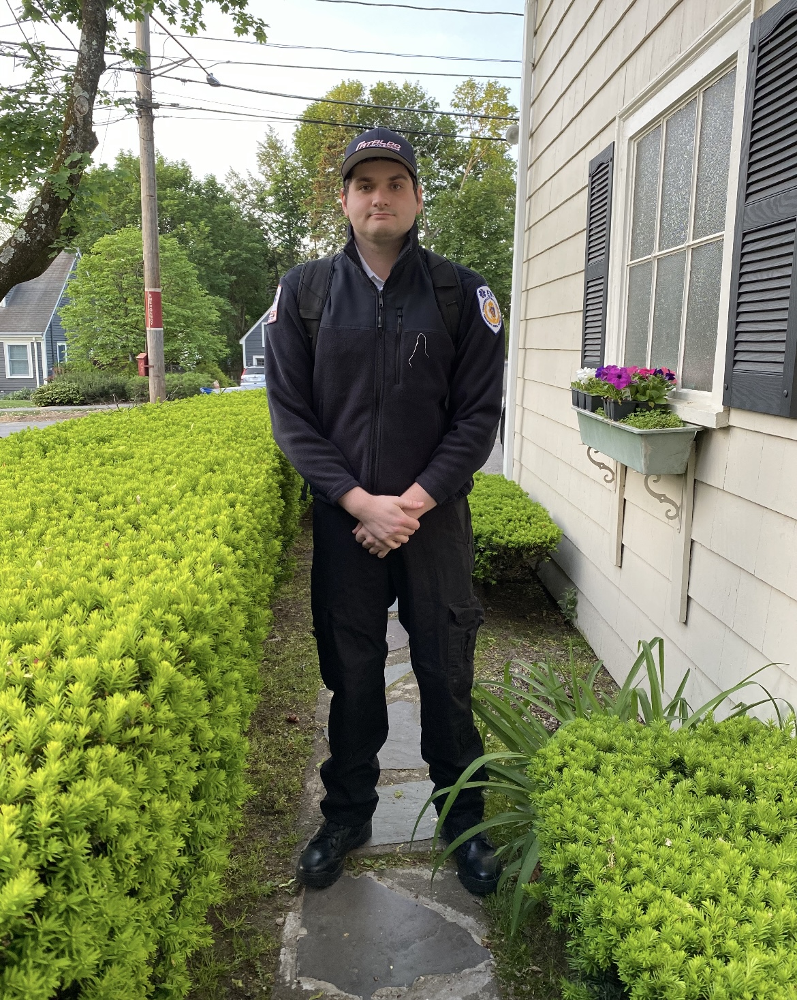
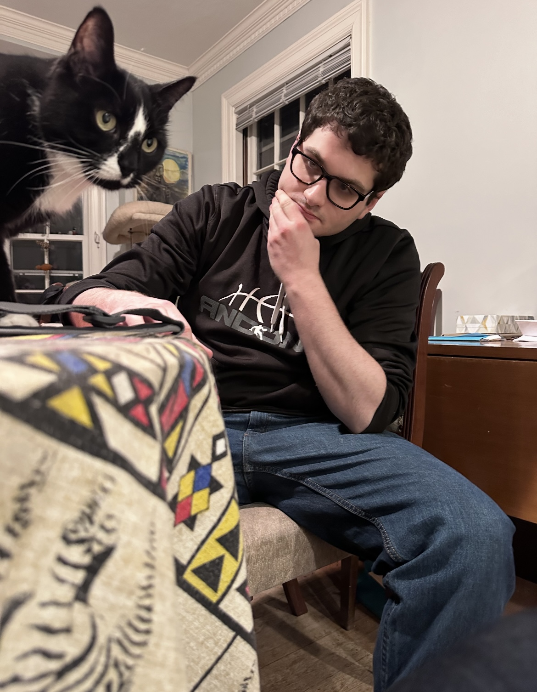
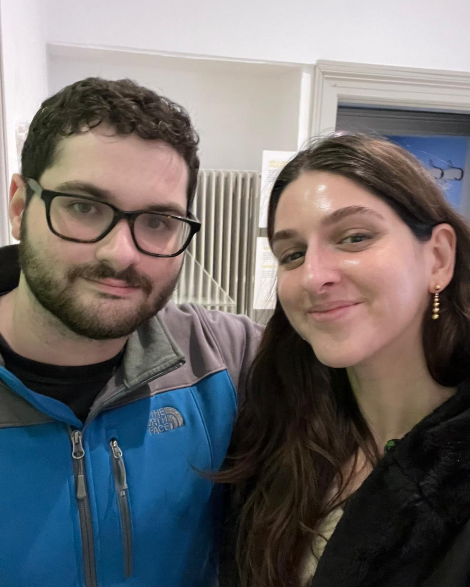

I am a recent graduate from the Boston University MS Biomedical Engineering program currently working at the Technion-Israeli Institute of Technology as an exploratory PhD Student under Professor Amit Meller, the dean of the university's Biomedical engineering department. I am hoping to make my way into the medical device industry, specifically in the fields of robotics and prosthetics. I received my Bachelor's from Wentworth Institute of Technology with a major in Biomedical Engineering and a minor in Chemistry. I was born in Newton Massachusetts, although both my parents are from South Africa. I grew up in an environment where multiculturalism and racial diversity is encouraged and promoted. I am a well rounded candidate with computer programming and wet lab experience. I have experience relating to biomechatronics, animal cultures, cell cultures, and analytical chemistry methods. I also have clinical experience from time working as an Emergency Medical Technician (EMT) in both the United States and Israel.